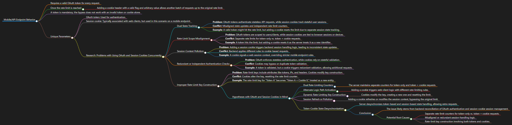

Finding A Rate Limit Bypass With Cookies
While doing penetration testing for a large tech company, I ran into a behavior that caught my attention. The mobile API endpoints were protected with OAuth tokens, which is standard practice for modern APIs. Each request needed a valid token, and there was a rate limit to keep traffic under control. On paper everything sounded straightforward.
In practice, I noticed that after hitting the rate limit, I could add a cookie header with a simple flag and an arbitrary value and suddenly the system would let me send more requests again. The token still had to be valid for this to work. The cookie did not have to match a real user session. It just needed to exist in the request in a way the server accepted as a cookie.
How The Behavior Showed Up
Under normal conditions, once I reached the set limit, further requests using the same token were blocked until the limit reset. That part was expected and lined up with the design. But when I sent the same requests with the same valid token and added a generic session cookie, the server allowed an additional series of calls. It felt as if the presence of the cookie placed the request into a slightly different path in the handling logic.
Some Possible Explanations
I did not have access to the internal code or configuration, so I can not say with certainty what was happening. I can only share some ideas that fit the behavior I observed based on past experience.
- Separate Tracking For Token And Session: OAuth tokens and cookies often serve different purposes. Tokens authenticate the caller, and cookies often track session state. If the system tracks rate limits separately for these two concepts and does not fully align them, then adding a cookie could cause the server to treat the request as coming from a different context.
- Mismatched Scopes For Rate Limits: It is possible that the backend uses one scope for limits based on tokens and a different scope for session cookies. If those scopes are not unified, a request that includes both might be counted differently from a token only request. That would explain why the limit felt like it reset once the cookie appeared.
- Extra Logic Triggered By Cookies: Adding a cookie can cause the server to run additional logic that was originally designed for web clients. If that path uses different rules for limits or has looser controls, it could unintentionally allow more traffic than the mobile API path alone.
- How The Rate Limit Key Is Built: Many rate limit systems build their keys using combinations of headers such as tokens, IP addresses, and cookies. If adding a cookie changes the key, then the server may believe it is seeing traffic from a new source and start counting again from zero.
Why This Matters In Real Use
Even though I can not prove the exact cause without seeing the backend, the outcome is still important. Any time two different ways of tracking identity or sessions are combined, there is a risk that the system will treat them as more separate than intended. That opens the door for people to send more traffic than the original limits were meant to allow.
In a real environment, this kind of behavior can support scraping, automated abuse, or just more pressure on backend services than the team expects. That is why small details around how tokens and cookies are handled together deserve attention.
Looking Back On The Finding
I do not view this as a simple failure or oversight by the team that built the system. These are the kinds of interactions that are easy to miss when features are added over time and different pieces of authentication logic grow alongside each other. Tokens and cookies each make sense on their own, but when they overlap in ways no one explicitly designed for, you get behavior like this.
When I reported this, my goal was to give the team one more signal to help them tighten the relationship between their different authentication paths, and to make sure that rate limits apply consistently regardless of how a client chooses to send its session information. Small adjustments here can go a long way toward keeping systems and users better protected.
If you are curious about how I worked through this, I built a mind map while I was testing. It walks through the questions I asked along the way and the branches I followed before landing on this behavior.
